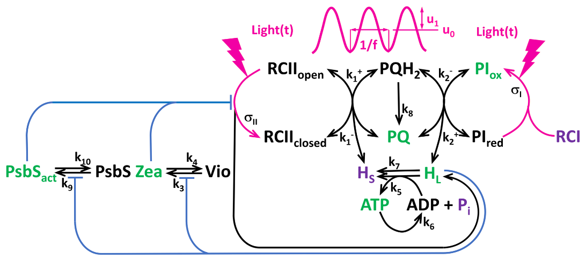

We saw about the fluorescence response of plants to oscillating light stimulation in a previous post. I want here to present a model for these responses based on a system of ordinary differential equations. We consider the following components:
- \(PQ\): the concentration of plastoquinone
- \(PI_{ox}\): the concentration of plastocyanin
- \(Zea\): the concentration of zeaxanthin
- \(Psb\): the concentration of plastocyanin
- \(HL\): the concentration of hydrogen ions in the thylakoid lumen
- \(ATP\): the concentration of adenosine triphosphate

The model is described by the following system of ODEs: [shinylive]\[ \begin{align*} \frac{dPQ}{dt} &= v_2 - v_1 + 2v_8 \\ \frac{dPI_{ox}}{dt} &= v_I - v_2 \\ \frac{dZea}{dt} &= v_3 - v_4 \\ \frac{dPsb}{dt} &= v_9 - v_{10} \\ \frac{dHL}{dt} &= b_H \cdot \left[ \frac{v_{II} + v_2}{N_A \cdot vol_{Lum}} - \frac{14}{3} \cdot \left( \frac{vol_{Str}}{vol_{Lum}} \right) \cdot v_5 - v_7 \right] \\ \frac{dATP}{dt} &= v_5 - v_6 \end{align*} \]
with the following reaction rates:
\[ \begin{aligned} v_1 &= k_{1p} \cdot \text{closed} \cdot PQ - k_{1m} \cdot (1 - \text{closed}) \cdot (PQ_{tot} - PQ) \\ v_2 &= k_{2p} \cdot (PQ_{tot} - PQ) \cdot PI_{ox} - k_{2m} \cdot PQ \cdot (PI_{tot} - PI_{ox}) \\ v_3 &= k_3 \cdot \frac{1 - Zea}{1 + \left( \frac{kQ^{Zea}}{HL} \right)^{n_{Zea}}} \\ v_4 &= k_4 \cdot Zea \\ v_5 &= k_5 \cdot \left[ (A_{tot} - ATP) - a \cdot ATP \cdot \left( \frac{1}{HL} \right)^{14/3} \right] \\ v_6 &= k_6 \cdot ATP \\ v_7 &= k_7 \cdot (HL - H_{\text{stroma}}) \\ v_8 &= k_8 \cdot (PQ_{tot} - PQ) \\ v_9 &= k_9 \cdot \frac{1 - Psb}{1 + \left( \frac{kQ^{PsbS}}{HL} \right)^{n_{PsbS}}} \\ v_{10} &= k_{10} \cdot Psb \\ v_{II} &= n_{PSII} \cdot \sigma \cdot L \cdot (1 - \text{closed}) \\ v_{I} &= n_{PSI} \cdot \sigma_{I0} \cdot \left( \frac{L \cdot L_{12}}{L + L_{12}} \right) \cdot (PI_{tot} - PI_{ox}) \end{aligned} \]
with the effective antenna cross-section \(\sigma\) given by: \[ \sigma = \sigma_{II0} \cdot (1 - FQmaxPsbS \cdot Psb) \cdot (1 - FQmaxZea \cdot Zea) \] where \(FQmaxPsbS\) and \(FQmaxZea\) are the maximum fluorescence quotients for plastocyanin and zeaxanthin, respectively.
and the closed fraction \(\text{closed}\) is given by: \[ \text{closed} = \frac{1}{1 + k_{1p} \cdot PQ / (\sigma \cdot L + k_{1m} \cdot (PQ_{tot} - PQ))} \]
We are now ready to simulate the fluorescence response to oscillating light. In the panel below, you can choose the average light intensity and its modulation as well as the frequency. You can, in particular, notice the strong inharmonicity of the response when modulations are large.
The model (Basic Dream Model - BDM) was inspired by the seminal work of Oliver Ebenhöh and collaborators (Ebenhöh et al. 2011). A first version was published in (Fuente et al. 2024) and later improved to include PSI notably in the more recent paper by Yuxi Niu and collaborators (Niu et al. 2025). It is this version of the model called BDMv2 which is implemented below.
The black line shows the chlorophyll fluorescence in response to oscillatory light and the red line shows the steady state fluorescence in response to constant light where the average intensity is the same in both cases (oscillatory or constant).
#| '!! shinylive warning !!': |
#| shinylive does not work in self-contained HTML documents.
#| Please set `embed-resources: false` in your metadata.
#| standalone: true
#| viewerHeight: 700
from shiny import App, ui, render, reactive
import numpy as np
import matplotlib.pyplot as plt
from scipy.integrate import odeint
from scipy.optimize import least_squares, root
import copy
def get_pars():
return {
"nPSII": 1, "nPSI": 1, "PQtot": 7, "Atot": 1000,
"k1p": 250, "k1m": 100, "k2p": 100, "k2m": 10,
"k3": 0.01, "k4": 0.001, "k5": 100, "k6": 8,
"k7": 500, "k8": 1, "k9": 0.05, "k10": 0.004,
"FQmaxPsbS": 0.3, "FQmaxZea": 0.3,
"nPsbS": 4, "nZea": 6,
"bH": 0.01,
"NA": 6.022e17,
"volLum": 2.66e-21,
"volStr": 2.09e-20,
"a": 9.02e-2,
"Hstroma": 10**(-7.8)/10**(-6),
"kQPsbS": 10**(-6)/10**(-6),
"kQZea": 10**(-6)/10**(-6),
"sigma_I0": 1,
"sigma_II0": 1,
"L12": 10000,
"PItot": 1,
"stim": {"L0": 100, "L1": 50, "T": 10},
"Phimax": .8
}
def get_L(t, p_stim):
return p_stim["L0"] + p_stim["L1"]*np.sin(2*np.pi*t/p_stim["T"]);
def eqns_SS(x, p):
PQ, PIox, Zea, Psb, HL, ATP = x
L0 = p["stim"]["L0"]
# sigma and closed fraction
sigma = p["sigma_II0"]*(1 - p["FQmaxPsbS"]*Psb)*(1 - p["FQmaxZea"]*Zea)
closed = 1 / (1 + p["k1p"]*PQ/(sigma*L0 + p["k1m"]*(p["PQtot"]-PQ)))
# fluxes
v1 = p["k1p"]*closed*PQ - p["k1m"]*(1-closed)*(p["PQtot"]-PQ)
v2 = p["k2p"]*(p["PQtot"]-PQ)*PIox - p["k2m"]*PQ*(p["PItot"]-PIox)
v3 = p["k3"]*(1 - Zea)/(1 + (p["kQZea"]/HL)**p["nZea"])
v4 = p["k4"]*Zea
v5 = p["k5"]*((p["Atot"]-ATP) - p["a"]*ATP*(1./HL)**(14./3))
v6 = p["k6"]*ATP
v7 = p["k7"]*(HL - p["Hstroma"])
v8 = p["k8"]*(p["PQtot"]-PQ)
v9 = p["k9"]*(1 - Psb)/(1 + (p["kQPsbS"]/HL)**p["nPsbS"])
v10 = p["k10"]*Psb
vII = p["nPSII"]*sigma*L0*(1 - closed)
vI = p["nPSI"]*p["sigma_I0"]*(L0*p["L12"]/(L0+p["L12"]))*(p["PItot"]-PIox)
return [
v2 - v1 + 2*v8,
vI - v2,
v3 - v4,
v9 - v10,
p["bH"]*((vII+v2)/(p["NA"]*p["volLum"])
- (14/3)*(p["volStr"]/p["volLum"])*v5
- v7),
v5 - v6
]
def eqns(x, t, p):
L = get_L(t, p["stim"])
PQ, PIox, Zea, Psb, HL, ATP = x
sigma = p["sigma_II0"]*(1 - p["FQmaxPsbS"]*Psb)*(1 - p["FQmaxZea"]*Zea)
closed = 1 / (1 + p["k1p"]*PQ/(sigma*L + p["k1m"]*(p["PQtot"]-PQ)))
v1 = p["k1p"]*closed*PQ - p["k1m"]*(1-closed)*(p["PQtot"]-PQ)
v2 = p["k2p"]*(p["PQtot"]-PQ)*PIox - p["k2m"]*PQ*(p["PItot"]-PIox)
v3 = p["k3"]*(1 - Zea)/(1 + (p["kQZea"]/HL)**p["nZea"])
v4 = p["k4"]*Zea
v5 = p["k5"]*((p["Atot"]-ATP) - p["a"]*ATP*(1./HL)**(14./3))
v6 = p["k6"]*ATP
v7 = p["k7"]*(HL - p["Hstroma"])
v8 = p["k8"]*(p["PQtot"]-PQ)
v9 = p["k9"]*(1 - Psb)/(1 + (p["kQPsbS"]/HL)**p["nPsbS"])
v10 = p["k10"]*Psb
vII = p["nPSII"]*sigma*L*(1 - closed)
vI = p["nPSI"]*p["sigma_I0"]*(L*p["L12"]/(L+p["L12"]))*(p["PItot"]-PIox)
return [
v2 - v1 + 2*v8, # PQ balance
vI - v2, # PIox balance
v3 - v4, # Zea dynamics
v9 - v10, # PsbS dynamics
p["bH"]*((vII+v2)/(p["NA"]*p["volLum"])
- (14/3)*(p["volStr"]/p["volLum"])*v5
- v7), # proton motive force
v5 - v6 # ATP balance
]
def get_ChlF(p, L, sols):
sigma = p["sigma_II0"]*(1 - p["FQmaxPsbS"]*sols[:,3])*(1 - p["FQmaxZea"]*sols[:,2])
closed = 1 / (1 + p["k1p"]*sols[:,0]/(sigma*L + p["k1m"]*(p["PQtot"]-sols[:,0])))
return (1-p["FQmaxZea"]* sols[:,2])*(1-p["FQmaxPsbS"]*sols[:,3])*( (1-closed)/(1+p["Phimax"]*(1-p["FQmaxZea"]* sols[:,2])*(1-p["FQmaxPsbS"]*sols[:,3])/(1-p["Phimax"])+closed))
def get_ChlF_single_val(p, L, x0):
sigma = p["sigma_II0"]*(1 - p["FQmaxPsbS"]*x0[3])*(1 - p["FQmaxZea"]*x0[2])
closed = 1 / (1 + p["k1p"]*x0[0]/(sigma*L + p["k1m"]*(p["PQtot"]-x0[0])))
return (1-p["FQmaxZea"]* x0[2])*(1-p["FQmaxPsbS"]*x0[3])*( (1-closed)/(1+p["Phimax"]*(1-p["FQmaxZea"]* x0[2])*(1-p["FQmaxPsbS"]*x0[3])/(1-p["Phimax"])+closed))
def get_nII(p, L, sols):
sigma = p["sigma_II0"]*(1 - p["FQmaxPsbS"]*sols[:,3])*(1 - p["FQmaxZea"]*sols[:,2])
closed = 1 / (1 + p["k1p"]*sols[:,0]/(sigma*L + p["k1m"]*(p["PQtot"]-sols[:,0])))
return p["nPSII"]*sigma*L*(1 - closed)
def get_nII_single_val(p, L, x0):
sigma = p["sigma_II0"]*(1 - p["FQmaxPsbS"]*x0[3])*(1 - p["FQmaxZea"]*x0[2])
closed = 1 / (1 + p["k1p"]*x0[0]/(sigma*L + p["k1m"]*(p["PQtot"]-x0[0])))
return p["nPSII"]*sigma*L*(1 - closed)
def get_dt(f):
if f>1: dt=1/(100*f)
else: dt=.01
return dt
def get_SS(p):
p_ss=copy.deepcopy(p)
p_ss["stim"]["L1"] = 0
lb = [0, 0, 0, 0, p["Hstroma"], 0 ]
ub = [p["PQtot"], p["PItot"], 1, 1, p["Hstroma"]*1000, p["Atot"]]
x0 = [p["PQtot"]/2, p["PItot"]/2,0.5, 0.5, p["Hstroma"]*10, p["Atot"]/2]
#ss = root(eqns_SS, x0, args=(p, ))
sols = odeint(eqns, x0, np.linspace(0,10000,100), args=(p_ss,), hmax=1, atol=1e-7, rtol=1e-11, mxstep=5000)
#PQ_ss, PIox_ss, Zea_ss, Psb_ss, HL_ss, ATP_ss = ss.x
#return ss.x
return sols[-1,:]
def one_run(p, NT=100, dt=.01):
x0 = get_SS(p)
dt = get_dt(1./p["stim"]["T"])
tf=NT*p["stim"]["T"]
N=int(tf/dt)
ts=np.linspace(0,tf,N)
sols = odeint(eqns, x0, ts, args=(p,), hmax=0.0001, atol=1e-7, rtol=1e-11, mxstep=5000)
L = get_L(ts, p["stim"])
return ts, L, sols, x0
app_ui = ui.page_sidebar(
ui.sidebar(
ui.input_slider("u0", "Light DC", 10, 1000, 100, step=10),
ui.input_slider("u1", "Light modulation amplitude", 0, 1000, 50, step=10),
ui.input_numeric("frequency", "Frequency (Hz)", 1),
ui.input_action_button("run", "Run Simulation"),
open="open",
),[shinylive]
ui.card(
ui.output_plot("plot")
),
#ui.card(
# ui.output_text_verbatim("summary")
#),
ui.card(
ui.output_text_verbatim("summary")
),
title="Basic Dream Model V2",
)
def server(input, output, session):
@reactive.event(input.run)
def simulate():
p=get_pars()
p["stim"]["T"] = 1./float(input.frequency())
p["stim"]["L1"] = float(input.u1())
p["stim"]["L0"] = float(input.u0())
dt = get_dt(1./p["stim"]["T"])
ts, L, sols, x0 = one_run(p, 3, dt)
F = get_ChlF(p, L, sols)
F0 =get_ChlF_s[shinylive]ingle_val(p, p["stim"]["L0"], x0)
return ts, F, F0, x0
@output
@render.plot
def plot():
ts, F, F0, x0 = simulate()
fig, ax = plt.subplots()
ax.plot(ts, F, 'k')
ax.plot([ts[0], ts[-1]], [F0, F0], 'r')
ax.set_xlabel("time [s]"); ax.set_ylabel("Fluorescence [a.u.]")
return fig
@output
@render.text
def summary():
ts, F, F0, x0 = simulate()
return f"Mean osc.: {np.mean(F)} | Steady state: {F0}"
app = App(app_ui, server)